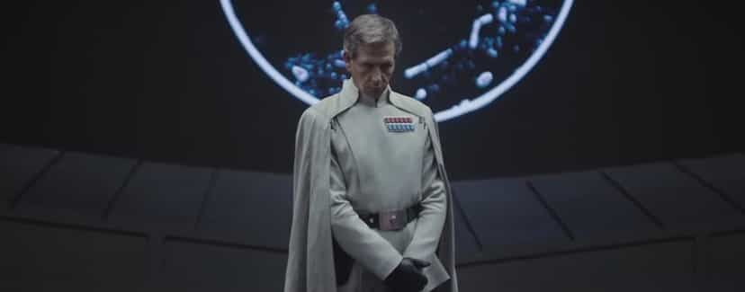
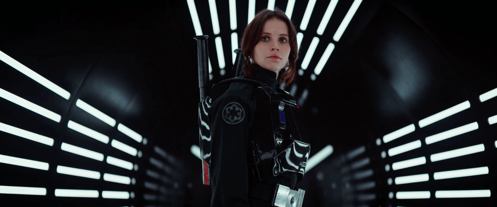

< < < Back
The New Star Wars Movie Spinoff Reaffirms Disney’s Hatred Of White Males – Return Of Kings
This is a rebellion, isn’t it? I rebel.
— Rogue One character Jyn Erso, continuing the sad new Star Wars emphasis on “girl power” in a world where men do basically all the heavy lifting.
Rogue One, due for release in December this year, is the first of several planned Star Wars spinoff films. And, like its trilogy predecessor The Force Awakens, which Return of Kings boycotted, this new instalment reiterates Disney’s hatred for white males. Unless, of course, they are cast as villains.
In The Force Awakens, for example, the only highly visible “good” white male character was Han Solo, who was a preexisting part of the Star Wars franchise and could hardly be replaced by either a non-white or non-male. Maybe I spoke too soon, however, because the new female lead of Rogue One is an obvious but very flawed attempted copy of the Han Solo template.
Rogue One tells the story of Jyn Erso, who, according to the trailer, is so rebellious even the Rebel Alliance apparently has severe reservations about recruiting her for a mission. Along with Hispanic Diego Luna’s character, she assembles a group of Rebel soldiers and sympathizers (who are all non-white males) to steal the plans for the first Death Star. This group is about as white male as Mogadishu prior to the arrival of American soldiers in Black Hawk Down.

Band of non-white males led by a female? Oh, yeah! Now let’s make the bad guys white males!
Those rounding out Disney’s “screw white men” squad include Rizwan Ahmed, a British rapper of Pakistani descent, who plays Bodhi Rook and simultaneously fills Disney’s Muslim quota. Ahmed stirred up considerable controversy with his 9/11-themed song about British police supposedly shooting “brown” people deliberately ten years ago. The song solidified his attempt at victim-status as a brown man himself, despite being a privileged Oxford graduate whose ancestors included indigenous elite stooges for the British in India. Asians Donnie Yen and Jiang Wen play two other members of the team, while African-American Forest Whitaker has joined the cast as what is perhaps best described as a non-Force using Obi-Wan Kenobi-style Clone Wars veteran.
The most laughable aspect of Erso’s recruitment is that the character Mon Mothma, another female, describes her as having been alone since she was 15. Here we see another example of the canonizing of otherwise damaged women presumably raised by single mothers and who do not know their father. Despite every objective measure pointing out that girls who grow up like this are much, much more likely to be dysfunctional and grow up to be outright delinquents, somehow it is what makes Jyn Erso perfect for the job.
Meanwhile, the villains are all white men. Ben Mendelsohn plays a white cape-wearing Imperial admiral and Danish actor Mads Mikkelsen is rumored to play another senior-ranking officer of the Empire, particularly as a non-film Star Wars character has already been based on his likeness.
Why don’t we see so many Jyn Ersos in our world?

Yes, because so many of the heroes you see in real world situations are female.
It is ironic that the two danger-seeking “good side” leads of The Force Awakens and Rogue One are female. Feminists like Anita Sarkeesian bellow for female representation in video games and other media, but they forget that in no sense are women even close to represented in real-life, life-endangering activities. As I have opined in at least two other articles, one about women and liberalism, and the other about a man who died trying to save his shit-testing girlfriend, women meticulously avoid trying to put themselves in harm’s way to save other people, especially men. Jyn Erso is nothing short of a false mirror for what feminists think women are when, in fact, almost all of them are completely different.
The female warrior mentality that Jyn Erso is meant to represent is pure folly. As continental Europe continues to feel threatened by the perceived expansionism of Russia, it is men in places like Finland and Lithuania who are carrying the increased defense load. Some 900,000 Finnish men received conscription reminders last year and Lithuania, which had both a female President and female Parliamentary Speaker at the time, went so far as to reintroduce male-only conscription.
It is little wonder that women claiming an equal martial spirit for females have to resort to obscure figures like Boudica resisting the Romans or the supremely mentally ill Joan of Arc, before then supporting the invention of puffed up heroines like Jyn Erso and Katniss Everdeen from The Hunger Games.
When justifying the character Jyn Erso, it no defense to say that Star Wars is science fiction. Whilst the franchise’s technology and the Force itself are concepts that have no direct parallels with our world, its higher themes, namely power, redemption, and sacrifice, reflect more concretely struggles we can relate to. Unless someone is brainwashed by the pernicious modern “culture,” no one can rationally relate to a world where women equally shoulder the burden of self-endangerment, let alone take the lead in it, for some good cause.
What’s Disney’s angle?
So if Western countries must (over-)diversify their populations, media, culture, and films, why don’t non-Western countries have to? Rizwan Ahmed’s parents and Donnie Yen himself both come from societies that categorically refuse to diversify.
The Star Wars franchise’s owner Disney is unquestionably championing women as something they are not amidst the cold, hard truths of real life. This fantasy portrayal of women will be very regressive for popular culture, ravaged as it already is, because the corporate juggernaut’s share of the film industry is, along with Marvel’s, so gargantuan. Expect much more of this claptrap to disgrace your local cinema screens.
Universities, which miraculously manage to still produce notable conservatives and other non-leftists, have been banging on the door with anti-white male “theories” for decades. Yet it seems that film and other entertainment mediums are finally closing the distance between themselves and academia with output like The Force Awakens and Rogue One. This development will be interesting to watch, as so many white male (or just male) celebrities have attached their public images to leftist causes, without ever having to lose something from their affiliation. They may indeed be feeling the pinch from this Hollywood feminist shift soon.
As we saw in The Force Awakens, the black character Finn became something of a fumbling parody compared to the “she always has her shit together” Rey. Likewise, in Rogue One, the non-white men are seemingly falling in behind Jyn Erso, with Diego Luna’s character only nominally calling the shots.
All in all, Rogue One is just another example of women doing things in films they never bother to do in real life.
Read More: Why Star Wars: The Force Awakens Is A Social Justice Propaganda Film